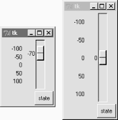

| I l@ve RuBoard |
|
7.7 Checkbutton, Radiobutton, and ScaleThis section introduces three widget types -- the Checkbutton (a multiple-choice input widget), the Radionbutton (a single-choice device), and the Scale (sometimes known as a "slider"). All are variations on a theme, and somewhat related to simple buttons, so we'll explore them as a group here. To make these widgets more fun to play with, we'll reuse the dialogTable module shown in Example 7-8 to provide callbacks for widget selections (callbacks pop up dialog boxes). Along the way, we'll also use the Tkinter variables we just met to communicate with these widgets' state settings. 7.7.1 CheckbuttonsThe Checkbutton and Radiobutton widgets are designed to be associated with Tkinter variables: pushing the button changes the value of the variable, and setting the variable changes the state of the button it is linked to. In fact, Tkinter variables are central to the operation of these widgets:
Both kinds of buttons provide both command and variable options. The command option lets you register a callback to be run immediately on button-press events, much like normal Button widgets. But by associating a Tkinter variable with the variable option, you can also fetch or change widget state at any time, by fetching or changing the value of the widget's associated variable. Since it's a bit simpler, let's start with the Tkinter checkbutton. Example 7-22 creates the set of five, captured in Figure 7-26. To make this more useful, it also adds a button that dumps the current state of all checkbuttons, and attaches an instance of the Quitter button we built earlier in the tour. Example 7-22. PP2E\Gui\Tour\demoCheck.pyfrom Tkinter import * # get base widget set
from dialogTable import demos # get canned dialogs
from quitter import Quitter # attach a quitter object to "me"
class Demo(Frame):
def __init__(self, parent=None, **args):
Frame.__init__(self, parent, args)
self.pack()
self.tools()
Label(self, text="Check demos").pack()
self.vars = []
for key in demos.keys():
var = IntVar()
Checkbutton(self,
text=key,
variable=var,
command=demos[key]).pack(side=LEFT)
self.vars.append(var)
def report(self):
for var in self.vars:
print var.get(), # current toggle settings: 1 or 0
print
def tools(self):
frm = Frame(self)
frm.pack(side=RIGHT)
Button(frm, text='State', command=self.report).pack(fill=X)
Quitter(frm).pack(fill=X)
if __name__ == '__main__': Demo().mainloop()
Figure 7-26. demoCheck in action In terms of program code, checkbuttons resemble normal buttons; they are even packed within a container widget. Operationally, though, they are a bit different. As you can probably tell from this figure (and can better tell by running this live), a checkbutton works as a toggle -- pressing one changes its state from off to on (deselected to selected); or from on to off again. When a checkbox is selected, it has a checked display, and its associated IntVar variable has a value of 1; when deselected, its display is empty, and its IntVar has value 0. To simulate an enclosing application, the State button in this display triggers the script's report method to display the current values of all five toggles on the stdout stream. Here is the output after a few pushes: C:\...\PP2E\Gui\Tour>python demoCheck.py 0 0 0 0 0 1 0 0 0 0 1 0 1 0 0 1 0 1 1 0 1 0 0 1 0 1 0 0 1 1 Really, these are the values of the five Tkinter variables associated with the checkbuttons with variable options, but they give the buttons' values when queried. This script associates Intvar variables with each of checkbuttons in this display, since they are or 1 binary indicators. StringVars will work here too, although their get methods would return strings "0" or "1" (not integers), and their initial state is an empty string (not the integer 0). This widget's command option lets you register a callback to be run each time the button is pressed. To illustrate, this script registers a standard dialog demo call as a handler for each of the checkbuttons: pressing a button changes the toggle's state, but also pops up one of the dialog windows we visited earlier on this tour. Interestingly, you can run the report method interactively too. When working this way, widgets pop up as lines are typed and are fully active even without calling mainloop: C:\...\PP2E\Gui\Tour>python >>> from demoCheck import Demo >>> d = Demo() >>> d.report() 0 0 0 0 0 >>> d.report() 1 0 0 0 0 >>> d.report() 1 0 0 1 1 7.7.1.1 Checkbuttons and variablesWhen I first studied this widget, my initial reaction was: So why do we need Tkinter variables here at all when we can register button-press callbacks? Linked variables may seem superfluous at first glance, but they simplify some GUI chores. Rather than asking you to accept this blindly, though, let me explain why. Keep in mind that a checkbuttons's command callback will be run on every press -- whether the press toggles the checkbutton to a selected or deselected state. Because of that, if you want to run an action immediately when a checkbutton is pressed, you will generally want to check the button's current value in the callback handler. Because there is no checkbutton "get" method for fetching values, you usually need to interrogate an associated variable to see if the button is on or off. Moreover, some GUIs simply let users set checkbuttons without running command callbacks at all, and fetch button settings at some later point in the program. In such a scenario, variables serve to automatically keep track of button settings. The demoCheck script's report method is representative of this latter approach. Of course, you could manually keep track of each button's state in press callback handlers too. Example 7-23 keeps its own list of state toggles, and updates it manually on command press callbacks. Example 7-23. PP2E\Gui\Tour\demo-check-manual.py# check buttons, the hard way (without variables)
from Tkinter import *
states = []
def onPress(i): # keep track of states
states[i] = not states[i] # changes 0->1, 1->0
root = Tk()
for i in range(10):
chk = Checkbutton(root, text=str(i), command=(lambda i=i: onPress(i)) )
chk.pack(side=LEFT)
states.append(0)
root.mainloop()
print states # show all states on exit
The lambda here passes along the pressed button's index in the states list (or else we would need a separate callback function for each button). When run, this script makes the 10-checkbutton display in Figure 7-27. Figure 7-27. Manual checkbutton state windowManually maintained state toggles are updated on every button press, and are printed when the GUI exits (technically, when the mainloop call returns): C:\...\PP2E\Gui\Tour>python demo-check-manual.py [0, 0, 1, 0, 1, 0, 0, 0, 1, 0] This works, and isn't too horribly difficult to manage manually. But linked Tkinter variables make this task noticeably easier, especially if you don't need to process checkbutton states until some time in the future. This is illustrated in Example 7-24. Example 7-24. PP2E\Gui\Tour\demo-check-auto.py# check buttons, the easy way
from Tkinter import *
root = Tk()
states = []
for i in range(10):
var = IntVar()
chk = Checkbutton(root, text=str(i), variable=var)
chk.pack(side=LEFT)
states.append(var)
root.mainloop() # let Tkinter keep track
print map((lambda var: var.get()), states) # show all states on exit
This looks and works the same, but there is no command button-press callback handler at all, because toggle state is tracked by Tkinter automatically: C:\...\PP2E\Gui\Tour>python demo-check-auto.py [0, 0, 1, 0, 0, 0, 1, 0, 0, 0] The point here is that you don't necessarily have to link variables with checkbuttons, but your GUI life will be simpler if you do. 7.7.2 RadiobuttonsRadiobuttons are toggles too, but they are generally used in groups: just like the mechanical station selector pushbuttons on radios of times gone by, pressing one Radiobutton widget in a group automatically deselects the one pressed last. In other words, at most one can be selected at once. In Tkinter, associating all radiobuttons in a group with unique values and the same variable guarantees that at most one can ever be selected at a given time. Like checkbuttons and normal buttons, radiobuttons support a command option for registering a callback to handle presses immediately. Like checkbuttons, radiobuttons also have a variable attribute for associating single-selection buttons in a group and fetching the current selection at arbitrary times. In addition, radiobuttons have a value attribute that lets you tell Tkinter what value the button's associated variable should have when the button is selected. Because more than one radiobutton is associated with the same variable, you need to be explicit about each button's value (it's not just a 1 or toggle scenario). Example 7-25 demonstrates radiobutton basics. Example 7-25. PP2E\Gui\Tour\demoRadio.pyfrom Tkinter import * # get base widget set
from dialogTable import demos # button callback handlers
from quitter import Quitter # attach a quit object to "me"
class Demo(Frame):
def __init__(self, parent=None):
Frame.__init__(self, parent)
self.pack()
Label(self, text="Radio demos").pack(side=TOP)
self.var = StringVar()
for (key, value) in demos.items():
Radiobutton(self, text=key,
command=self.onPress,
variable=self.var,
value=key).pack(anchor=NW)
Button(self, text='State', command=self.report).pack(fill=X)
Quitter(self).pack(fill=X)
def onPress(self):
pick = self.var.get()
print 'you pressed', pick
print 'result:', demos[pick]()
def report(self):
print self.var.get()
if __name__ == '__main__': Demo().mainloop()
Figure 7-28 shows what this script generates when run. Pressing any of this window's radiobuttons triggers its command handler, pops up one of the standard dialog boxes we met earlier, and automatically deselects the button previously pressed. Like checkbuttons, radiobuttons are packed; this script packs them to the the top to arrange vertically, and then anchors each on the northwest corner of its allocated space so that they align well. Figure 7-28. demoRadio in actionLike the checkbutton demo script, this one also puts up a State button to run the class's report method, and show the current radio state (the button selected). Unlike the checkbutton demo, this script also prints the return values of dialog demo calls run as its buttons are pressed. Here is what the stdout stream looks like after a few presses and state dumps; states are shown in bold: C:\...\PP2E\Gui\Tour>python demoRadio.py you pressed Input result: 3.14 Input you pressed Open result: C:/PP2ndEd/examples/PP2E/Gui/Tour/demoRadio.py Open you pressed Query result: yes Query 7.7.2.1 Radiobuttons and variablesSo why variables here? For one thing, radiobuttons also have no "get" widget method to fetch the selection in the future. More importantly, in radiobutton groups, the value and variable settings turn out to be the whole basis of single-choice behavior. In fact, to make radiobuttons work normally at all, it's crucial that they all are associated with the same Tkinter variable, and all have distinct value settings. To truly understand why, though, you need to know a bit more about how radiobuttons and variables do their stuff. We've already seen that changing a widget changes its associated Tkinter variable, and vice versa. But it's also true that changing a variable in any way automatically changes every widget it is associated with. In the world of radiobuttons, pressing a button sets a shared variable, which in turn impacts other buttons associated with that variable. Assuming that all buttons have distinct values, this works as you expect: When a button press changes the shared variable to the pressed button's value, all other buttons are deselected, simply because the variable has been changed to a value not their own. This ripple effect is a bit subtle, but it might help to know that within a group of radiobuttons sharing the same variable, if you assign a set of buttons the same value, the entire set will be selected if any one of them is pressed. Consider Example 7-26 and Figure 7-29, for example; because radiobuttons 0, 3, 6, and 9 all have value (the remainder of division by 3), all are selected if any are selected (Figure 7-29). Example 7-26. PP2E\Gui\Tour\demo-radio-multi.py# see what happens when some buttons have same value
from Tkinter import *
root = Tk()
var = StringVar()
for i in range(10):
rad = Radiobutton(root, text=str(i), variable=var, value=str(i % 3))
rad.pack(side=LEFT)
root.mainloop()
Figure 7-29. Radiobuttons gone bad?If you press 1, 4, or 7 now, all three of these are selected, and any existing selections are cleared (they don't have value "1"). That's not normally what you want, so be sure to give each button the same variable but a unique value if you want radiobuttons to work as expected. In the demoRadio script, for instance, the name of the demo provides a naturally unique value for each button. 7.7.2.2 Radiobuttons without variablesIn Example 7-27, too, you could implement a single-selection model without variables, by manually selecting and deselecting widgets in the group, in a callback handler of your own. On each press event, for example, you could issue deselect calls for every widget object in the group and select the one pressed. Example 7-27. PP2E\Gui\Tour\demo-radio-manual.py# radio buttons, the hard way (without variables)
# note that deselect for radio buttons simply sets the button's
# associated value to a null string, so we either need to still
# give buttons unique values, or use checkbuttons here instead;
from Tkinter import *
state = ''
buttons = []
def onPress(i):
global state
state = i
for btn in buttons:
btn.deselect()
buttons[i].select()
root = Tk()
for i in range(10):
rad = Radiobutton(root, text=str(i),
value=str(i), command=(lambda i=i: onPress(i)) )
rad.pack(side=LEFT)
buttons.append(rad)
root.mainloop()
print state # show state on exit
This works -- it creates a 10-radiobutton window that looks just like the one in Figure 7-29, but implements a single-choice radio style interface, with current state available in a global Python variable printed on script exit. By associating Tkinter variables and unique values, though, you can let Tkinter do all this work for you, as shown in Example 7-28. Example 7-28. PP2E\Gui\Tour\demo-radio-auto.py# radio buttons, the easy way
from Tkinter import *
root = Tk() # IntVars work too
var = IntVar() # state = var.get()
for i in range(10):
rad = Radiobutton(root, text=str(i), value=i, variable=var)
rad.pack(side=LEFT)
root.mainloop()
print var.get() # show state on exit
This works the same, but is a lot less to type and debug. Notice that this script associates the buttons with an IntVar, the integer type sibling of StringVar; as long as button values are unique, integers work fine for radiobuttons too. 7.7.2.3 Hold on to your variablesOne minor word of caution: you should generally hold on to the Tkinter variable object used to link radiobuttons for as long as the radiobuttons are displayed. Assign it to a module global variable, store it in a long-lived data structure, or save it as an attribute of a long-lived class object as done by demoRadio -- just as long as you retain a reference to it somehow. You normally will fetch state anyhow, so it's unlikely that you'll ever care about what I'm about to tell you. But in the current Tkinter, variable classes have a __del__ destructor that automatically unsets a generated Tk variable when the Python object is reclaimed (i.e., garbage-collected). The upshot is that your radiobuttons may all be deselected if the variable object is collected, at least until the next press resets the Tk variable to a new value. Example 7-29 shows one way to trigger this. Example 7-29. PP2E\Gui\Tour\demo-radio-clear.py# hold on to your radio variables (an obscure thing, indeed)
from Tkinter import *
root = Tk()
def radio1(): # local vars are temporary
#global tmp # making it global fixes the problem
tmp = IntVar()
for i in range(10):
rad = Radiobutton(root, text=str(i), value=i, variable=tmp)
rad.pack(side=LEFT)
tmp.set(5)
radio1()
root.mainloop()
This should come up with button 5 selected initially, but doesn't. The variable referenced by local tmp is reclaimed on function exit, the Tk variable is unset, and the 5 setting is lost (all buttons come up unselected). These radiobuttons work fine, though, one you start pressing them, because that resets the Tk variable. Uncommenting the global statement here makes 5 start out set, as expected. Of course, this is an atypical example -- as coded, there is no way to know which button is pressed, because the variable isn't saved (and command isn't set). In fact, this is so obscure that I'll just refer you to demo-radio-clear2.py on the CD for an example that works hard to trigger this oddity in other ways. You probably won't care, but you can't say that I didn't warn you if you ever do. 7.7.3 Scales (Sliders)Scales (sometimes called "sliders") are used to select among a range of numeric values. Moving the scale's position with mouse drags or clicks moves the widget's value among a range of integers, and triggers Python callbacks if registered. Like checkbuttons and radiobuttons, scales have both a command option for registering an event-driven callback handler to be run right away when the scale is moved, as well as a variable option for associating a Tkinter variable that allows the scale's position to be fetched and set at arbitrary times. You can process scale settings when they are made, or let the user pick a setting for later use. In addition, scales have a third processing option -- get and set methods that scripts may call to access scale values directly without associating variables. Because scale command movement callbacks also get the current scale setting value as an argument, it's often enough just to provide a callback for this widget, without resorting to either linked variables or get/set method calls. To illustrate the basics, Example 7-30 makes two scales -- one horizontal and one vertical -- and links them with an associated variable to keep them in sync. Example 7-30. PP2E\Gui\Tour\demoScale.pyfrom Tkinter import * # get base widget set
from dialogTable import demos # button callback handlers
from quitter import Quitter # attach a quit frame to me
class Demo(Frame):
def __init__(self, parent=None):
Frame.__init__(self, parent)
self.pack()
Label(self, text="Scale demos").pack()
self.var = IntVar()
Scale(self, label='Pick demo number',
command=self.onMove, # catch moves
variable=self.var, # reflects position
from_=0, to=len(demos)-1).pack()
Scale(self, label='Pick demo number',
command=self.onMove, # catch moves
variable=self.var, # reflects position
from_=0, to=len(demos)-1,
length=200, tickinterval=1,
showvalue=YES, orient='horizontal').pack()
Quitter(self).pack(side=RIGHT)
Button(self, text="Run demo", command=self.onRun).pack(side=LEFT)
Button(self, text="State", command=self.report).pack(side=RIGHT)
def onMove(self, value):
print 'in onMove', value
def onRun(self):
pos = self.var.get()
print 'You picked', pos
pick = demos.keys()[pos] # map from position to key
print demos[pick]()
def report(self):
print self.var.get()
if __name__ == '__main__':
print demos.keys()
Demo().mainloop()
Besides value access and callback registration, scales have options tailored to the notion of a range of selectable values, most of which are demonstrated in this example's code:
Note that scales are also packed in their container, just like other Tkinter widgets. Let's see how these ideas translate in practice; Figure 7-30 shows the window you get if you run this script live on Windows (you get a similar one on Unix and Macs). Figure 7-30. demoScale in actionFor illustration purposes, this window's State button shows the scales' current values, and "Run demo" runs a standard dialog call as before using the integer value of the scales to index the demos table. The script also registers a command handler that fires every time either of the scales is moved, and prints their new positions. Here is a set of messages sent to stdout after a few moves, demo runs (italic), and state requests (bold): C:\...\PP2E\Gui\Tour>python demoScale.py ['Error', 'Input', 'Open', 'Query', 'Color'] in onMove 0 in onMove 0 in onMove 1 1 in onMove 2 You picked 2 C:/PP2ndEd/examples/PP2E/Gui/Tour/demoScale.py in onMove 3 3 You picked 3 yes 7.7.3.1 Scales and variablesAs you can probably tell, scales offer a variety of ways to process their selections: immediately in move callbacks, or later by fetching current position with variables or scale method calls. In fact, Tkinter variables aren't needed to program scales at all -- simply register movement callbacks, or call the scale get method to fetch scale values on demand as in the simpler scale example in Example 7-31. Example 7-31. PP2E\Gui\Tour\demo-scale-simple.pyfrom Tkinter import * root = Tk() scl = Scale(root, from_=-100, to=100, tickinterval=50, resolution=10) scl.pack(expand=YES, fill=Y) def report(): print scl.get() Button(root, text='state', command=report).pack(side=RIGHT) root.mainloop() Figure 7-31 shows two instances of this program running on Windows -- one stretched and one not (the scales are packed to grow vertically on resizes). Its scale displays a range from -100 to 100, uses the resolution option to adjust the current position up or down by 10 on every move, and sets the tickinterval option to show values next to the scale in increments of 50. When you press the State button in this script's window, it calls the scale's get method to display the current setting, without variables or callbacks of any kind: C:\...\PP2E\Gui\Tour>python demo-scale-simple.py 0 60 -70 Figure 7-31. A simple scale without variablesFrankly, the only reason Tkinter variables are used in the demoScale script at all is to synchronize scales. To make the demo interesting, this script associates the same Tkinter variable object with both scales. As we learned in the last section, changing a widget changes its variable, but changing a variable also changes all the widgets it is associated with. In the world of sliders, moving the slide updates that variable, which in turn might update other widgets associated with the same variable. Because this script links one variable with two scales, it keeps them automatically in sync: moving one scale moves the other too, because the shared variable is changed in the process and so updates the other scale as a side effect. Linking scales like this may or may not be typical of your applications (and borders on deep magic), but it's a powerful tool once you get your mind around it. By linking multiple widgets on a display with Tkinter variables, you can keep them automatically in sync, without making manual adjustments in callback handlers. On the other hand, the synchronization could be implemented without a shared variable at all by calling one scale's set method from a move callback handler of the other. I'll leave such a manual mutation as a suggested exercise, though. One person's deep magic might be another's evil hack. |
| I l@ve RuBoard |
|